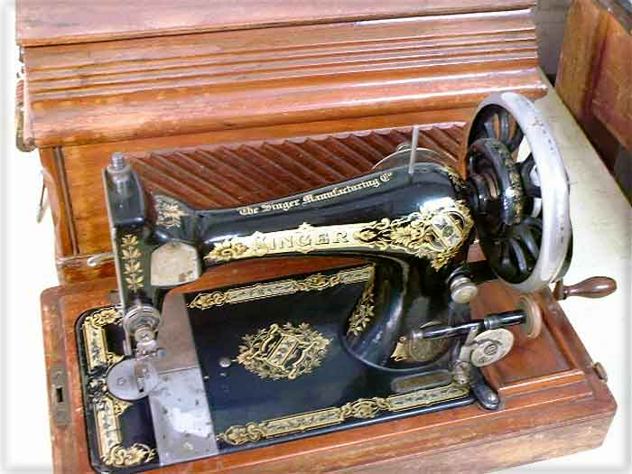
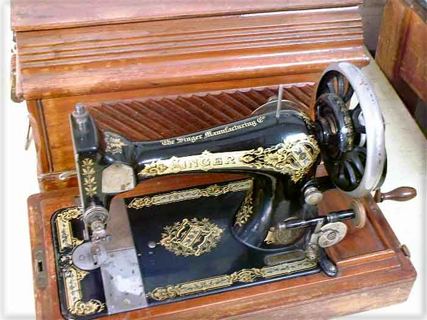

SINGER VIBRATING SHUTTLE MACHINES
Singer 28K2

© Alan Quinn 2003
Pictures posted on this page may not be reproduced or distributed in part or in whole without the prior written permission of the relevant copyright owner

Pictures posted on this page may not be reproduced or distributed in part or in whole without the prior written permission of the relevant copyright owner